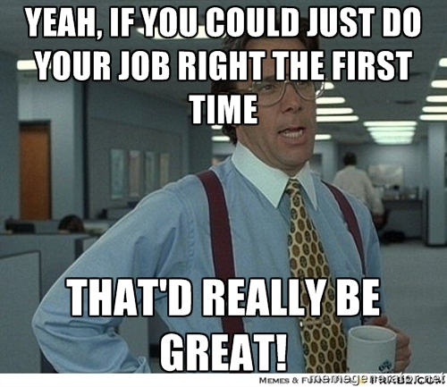
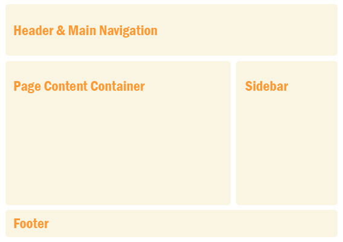
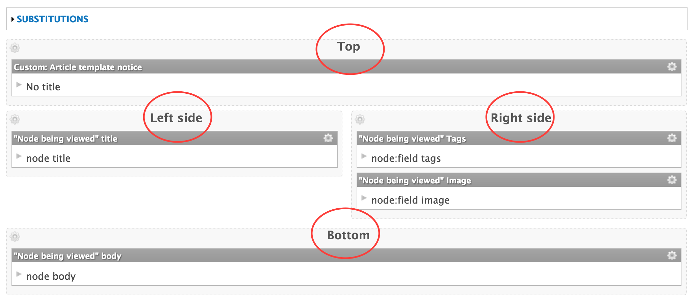
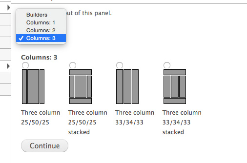
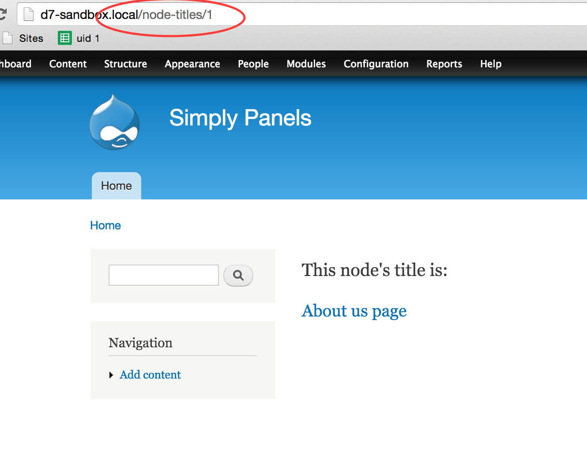
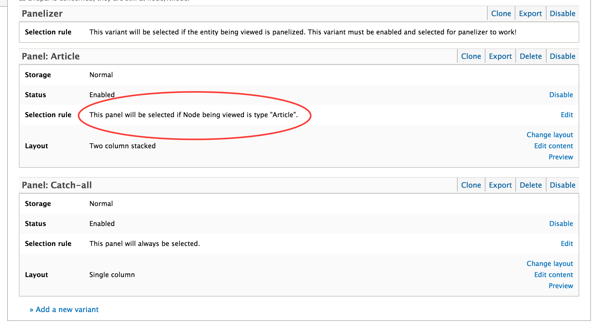
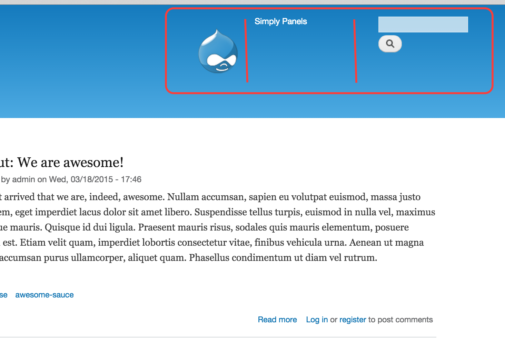
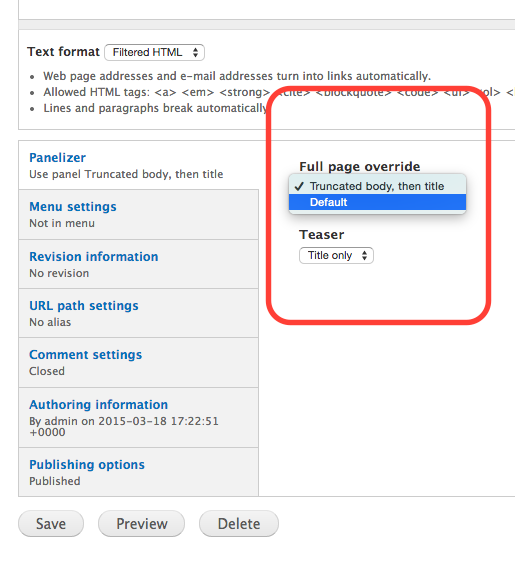
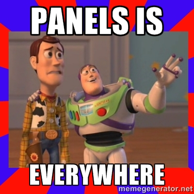

#MidCamp
Simplify your life with Panels /
Chris Hill
Simplify your life with Panels
http://2015.midcamp.org/session-proposal/simplify-your-life-panels
MidCamp 2015
#MidCamp
Chris Hill
krisahil (drupal.org)
Bonnier Corporation
http://sandcastle.bonniercorp.com/
A platform for high-functioning media websites.
Not the Drupal-famous "Chris Hill" of Weather.com fame.
Good ways to build,
and bad. :-(
Best practices is about learning from those who have succeeded.
Goals
- Discuss block-placement strategies.
- Convince you to do
myour way. - Stay away from the weeds.
Who here is perfect?
We've all "architected" solutions we're not proud of.
- Printed HTML in page TPL?
- Programmatically rendered a block in a node's body?
- Added inline CSS to node's body to achieve weird layout (like that's gonna be responsive)?
- Added CSS or JS outside of drupal_add_css/js()?
- Added SQL queries in template files instead of by preprocessing?
A better way
Plan your next site!
Research and decide modules before starting build. No fun, I know. :-)
Page layout
- Header
- Content
- Sidebar
- Footer
Big question: How to place blocks into those regions?
Core blocks administration
- Deceptively simple
- Each block can be placed into only one region.
Context module
- Provides intricate control
- It's not Panels. :-)
What is Panels?
Comprehensive suite to manage blocks across all regions.
Simplify your life with one toolset.
- Drag-and-drop interface to place blocks.
- Layouts: Avoid CSS for basic layouts!
- Contexts: Blocks are always aware of what's available.
Panels tools
Why so many?! Their titles can be confusing.
- Page manager
- Mini panels
- Panelizer
Panel nodes- Panels everywhere
Prereq 1: Layouts
- Each section is a "region".
- The "blocks" can be regular blocks, Views, menus, etc.
Layouts provided
- Plugin method: Declares the regions, template, and CSS.
- Can be stored in theme or modules.
Prereq 2: Contexts
- What type of data is available on this page?
- Only appropriate blocks are available for use.
Page manager
Replacement (mostly) for hook_menu() for custom pages.
Arguments in URL become contexts (e.g. node ID becomes full node).
Page manager: Variants
- Selection rules determine which variant gets used.
- Don't get too crazy with the rules.
Mini panels
Group blocks together as Panels layouts.
Can be used as blocks throughout site.
Panelizer
More checkboxes than you can shake a stick at!
Read tutorials before starting!
Remember, with great power comes... great complexity.
Panelizer: Why so great?
- Allows editors to choose a Panels template per node.
- Customize the Panel for one specific node. Powerful, and dangerous!
- And both of these for each view mode for each node!
Panelizer: So many choices!
Panels is greedy.
What is Panels Everywhere?
- Frees you from core's blocks and regions.
- Control the header, sidebars, and footer in Panels interface.
- Variants allow easy switching of page layout and blocks.
How to use?
- Use a supported theme.
- Try to use from start of project.
- Variants allow easy switching of page layout and blocks.
Next steps
Great modules to extend Panels:
Closing
- Is Panels ecosystem perfect?
- Mature project, with lots of supporting themes and modules.
- Will tomorrow's you be happy?